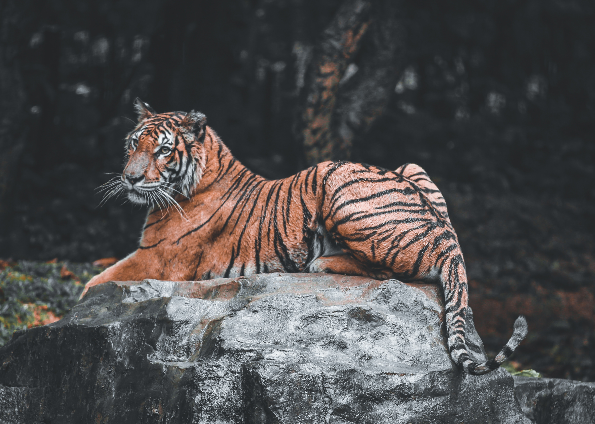
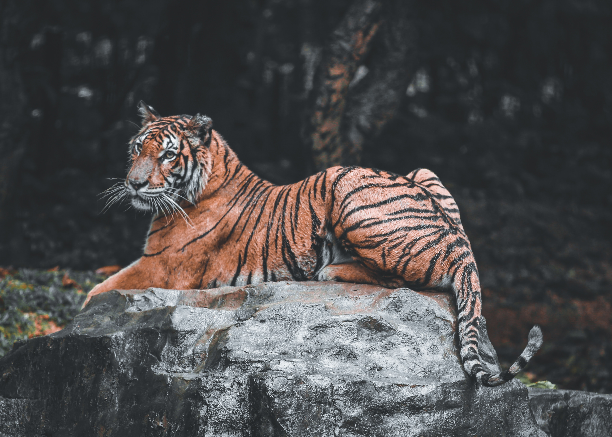
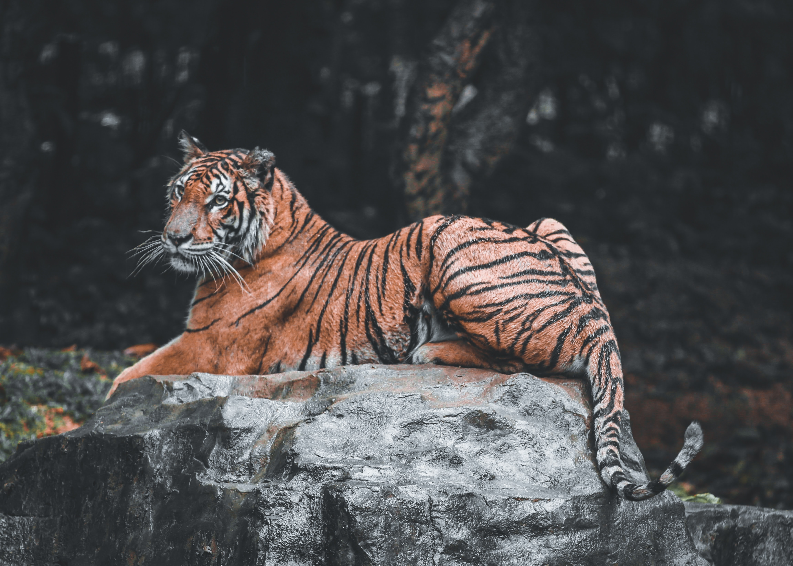

사전
호랑이
사자
호랑이(Tiger)
정의
고양이과
에 속하는 맹수 (어린 개체는 개호주라 부름)
무게
크기는 아종에 따라 다름
발리호랑
이는
100kg
미만
시베리아 호랑이
는 수컷일때
360kg
크기
70 – 120cm

속도
49 – 65km/h
(성체,
순간 최고 속도
)
호랑이의 흥미로운점
(1사람보다
단기기억
이 뛰어나다.)
(2어떤사람보다도
눈이 밝다
)
호랑이의 종류
뱅골 호랑이, 시베리아 호랑이, 카스피 호랑이, 수마트라 호랑이 (등..)
 
